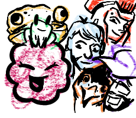

Yo, have you ever checked Twitch out? I’ve messed with the application multiple times. It wasn’t until 2026 that I began to find an amazing community. In 2015 and 2016 a pastor with the username GodSquad appeared on Twitch, and he did a stream that involved him playing the famous shooter; Halo and the stream was titled "A Pastor Playing Halo". Because of this stream God began to bring people together in the gaming community, people such as Razelle, TheRealCalen, TomahawkWarroirftw, kevalated, lilfrog03, Biscuitbaby, and many others. I have also developed my own channel with the name falconbread, and this community is growing everyday. Upon writing the last sentence I just met some new streamers and gamers. The amazing thing is that our community is very open about talking about Jesus which is the most important thing. We are open to everyone, and are willing to help.
The community is a very safe place for anyone, there have been many times where people have come in on rough days; but there are also times when the streamers themselves are having difficult days as well. Some choose to show that while others confront it in other means. I know from my time with Razelle there are times where we’re Just Chatting (a certain channel variant where streamers can just have a moment or stream talking to the viewers.) we’ll be doing Bible Studies then talk about food. One time my older sister asked me to tell her to try a typing game, to see how fast she can go.